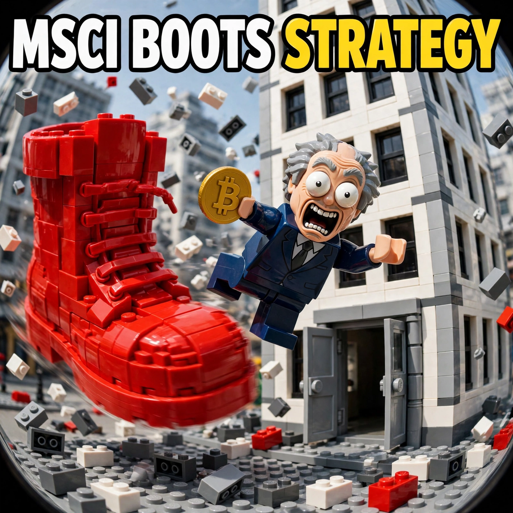

Top Stories — Friday, Nov 13, 2026

Jensen Huang has resigned as chief executive of Nvidia after 33 years at the helm, ending one of the longest and most successful CEO runs in tech history. Huang co-founded Nvidia in 1993 and built it into the world's most valuable chipmaker on the AI boom. Chief financial officer Colette Kress has been named interim chief executive while the board searches for a permanent successor.
Read the full story →
Bitcoin has fallen 6.8 percent to $68,900 as more than $1.6 billion in crypto positions were liquidated in the selloff. The fear index has dropped into extreme fear territory as traders rush for the exits. The slide comes as markets digest hot inflation data and rising odds of a December Federal Reserve rate hike.
Read the full story →
MSCI is removing Strategy from its indexes, a decision that forces index-tracking funds to sell their MSTR holdings by November 30. The exclusion strikes at the heart of Michael Saylor's Bitcoin treasury model, which relies on index inclusion to keep passive capital flowing into the stock. Strategy is the world's largest corporate holder of Bitcoin, so the forced selling adds fresh pressure to both the shares and the Bitcoin market.
Read the full story →
Costco has declared a record $30-per-share special dividend, a $13.3 billion payout that doubles its 2024 special dividend, alongside a $4 billion share buyback. The warehouse giant is returning a flood of cash to shareholders after another year of strong sales and membership growth. The payout rewards the patient holders who have watched Costco's stock climb while its aisles stay packed.
Read the full story →
October's consumer price index ran hot at 0.4 percent, hotter than economists expected, and markets now fully price a Federal Reserve rate hike in December. The sticky inflation reading undercuts hopes for rate cuts and has rattled both stocks and crypto. Traders are bracing for a hawkish Fed as the central bank weighs whether prices are cooling fast enough.
Read the full story →